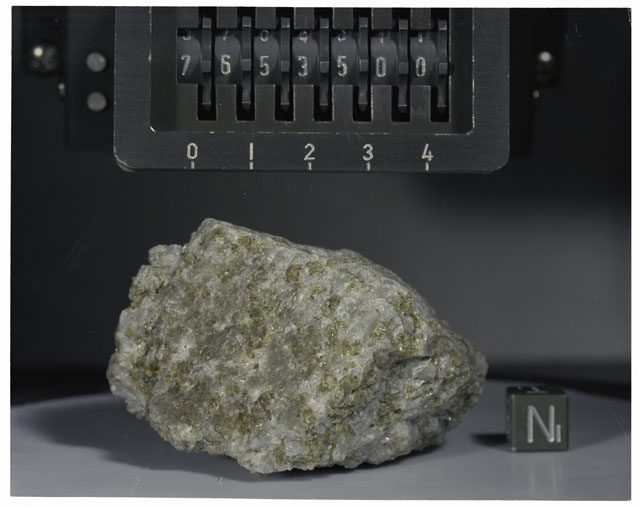
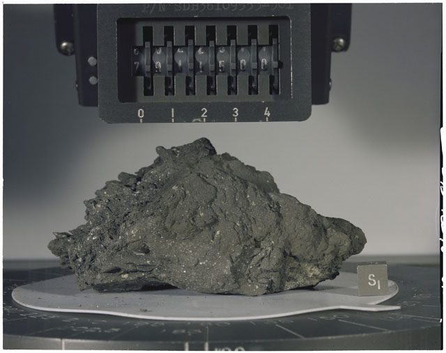
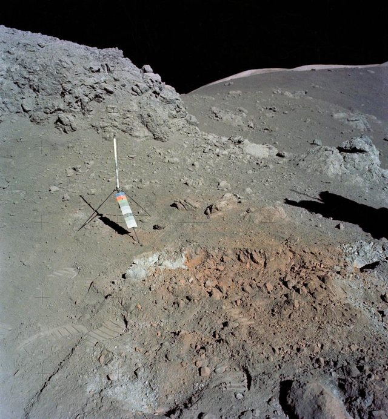
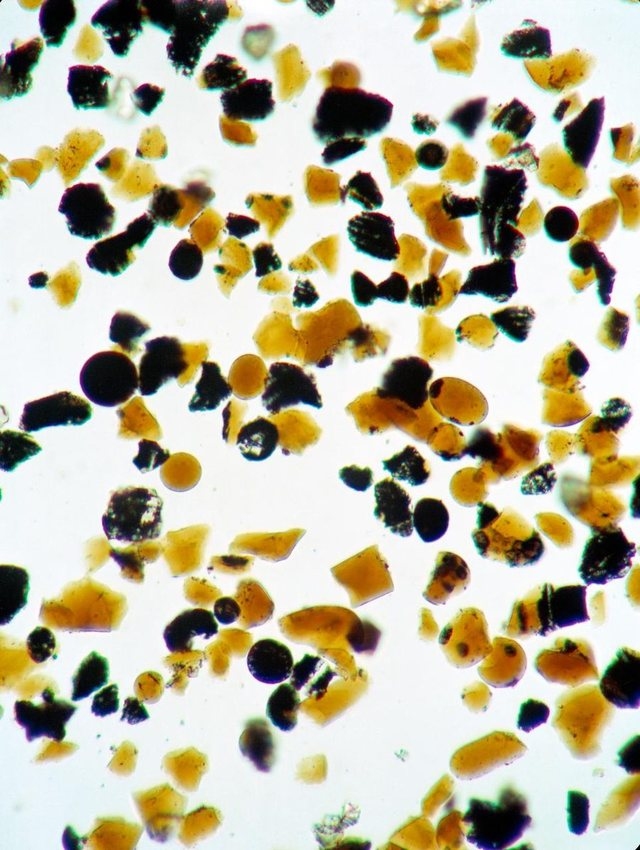

A troctolite: a coarse-grained igneous rock made almost entirely of large grains of pale green olivine and white plagioclase feldspar. It weighs about 156 g and came back in a rake sample from the soil at Station 6, the stop at the split boulder, on the third moonwalk.
It crystallized deep in the young Moon’s crust about 4.2 to 4.3 billion years ago, slowly enough to grow its large, interlocking grains, and was later dug out by impacts.
Few rocks have been studied so closely. In 2009 researchers at MIT found it weakly magnetized since it formed, evidence that the young Moon had a magnetic field from a molten core. In 2021, chemical differences still preserved inside its crystals showed it must have cooled within about 20 million years, far faster than the more than 100 million years once thought.

Regolith breccia: loose lunar soil and broken rock welded into stone by the shock of an impact. On the third moonwalk the crew broke this 346 g piece off the top of a fractured boulder on the rim of Van Serg crater, hoping it would tell how and when the crater formed. Its partner, 79135, 2.3 kg, came from the bottom of the same boulder.
About 60% of it is a fine matrix of mineral debris and glass. Mixed through it are fragments of highland rock, mare basalt and other basalts, and beads of orange volcanic glass like those at Shorty crater: soil from across the valley, swept up and pressed together.


The orange soil itself: 1,180 g scooped from the rim of Shorty crater on the second moonwalk. With the samples from the trench Harrison Schmitt dug across the orange zone and the core tube driven beside it, the set comes to about 4.6 kg.
About 99% of it is beads and broken bits of orange glass; the rest is mostly fragments of basalt. Each bead is a droplet of lava sprayed from a fire fountain about 3.6 billion years ago and frozen to glass in flight. The color comes from titanium.
The beads still hold traces of the gases that drove the eruption. In 2008 and 2011 they gave the first strong evidence of water inside the Moon.